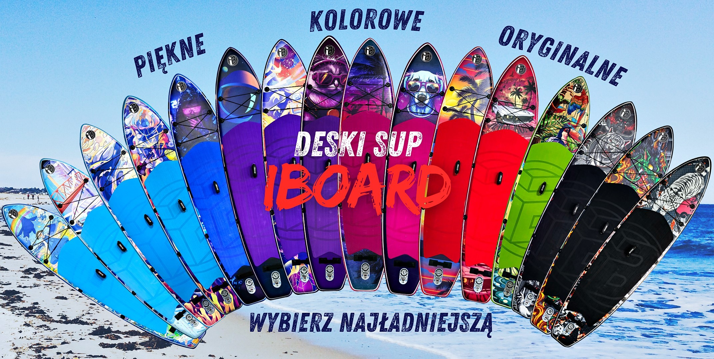
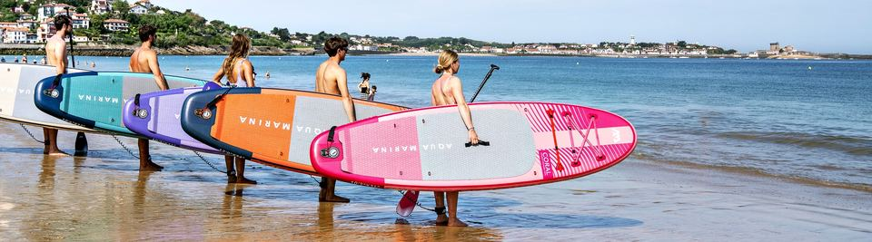
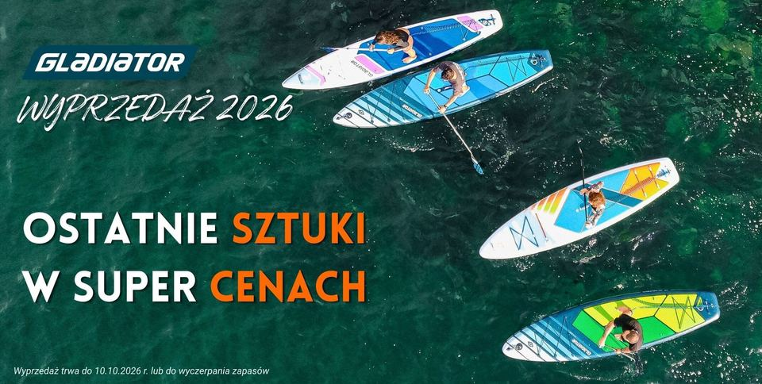
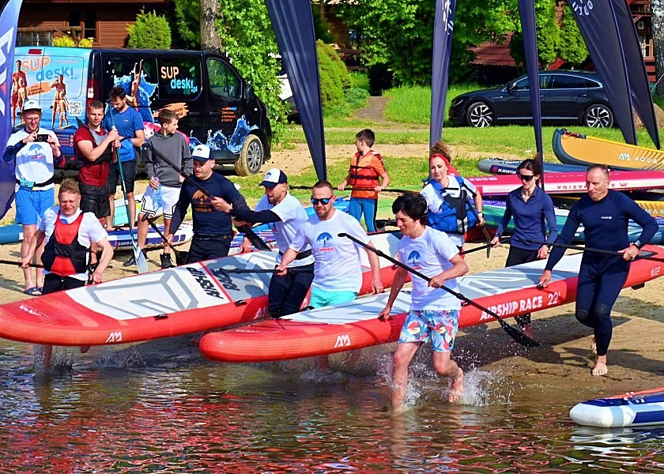

Przesun suwak w lewo i w prawo. Po prawej jest wersja "na telefon" - najmocniej zmniejszona, wiec jesli tu nie widac roznicy, w zestawie A tym bardziej jej nie bedzie.




| plik | wymiary | dzis | A pelny | B telefon | B WebP |
|---|---|---|---|---|---|
| 38c595857042adc686c2_deska-sup-iboard-ladny-kolorowy-grafika-oryginalny-pies-ot.jpg | 2144x1080 | 758 | 483 | 122 | 101 |
| jaka-deska-wybrać4.jpg | 2350x654 | 564 | 335 | 61 | 54 |
| 984b52684bf15935c564_gladiator-wyprzedaz-2026-.jpg | 2144x1080 | 520 | 423 | 102 | 77 |
| large-sup-demo-tour-kaszuby-2026-strona.jpg | 840x600 | 225 | 147 | 147 | 145 |
| 1ffd6706ace80a9edf39_silniki-elektryczne-do-desek-sup-.jpg | 2144x1080 | 167 | 144 | 64 | 38 |
| large-blue-mind-theory-sup-.jpg | 840x600 | 131 | 84 | 84 | 61 |
| home_default-sup-demo-tour-kaszuby-2026-strona.jpg | 575x410 | 111 | 71 | 71 | 71 |
| large-111.jpg | 840x600 | 107 | 88 | 88 | 66 |
| 14.png | 285x285 | 93 | 91 | 91 | 25 |
| large-sup-demo-tour-kaszuby-2025-program.jpg | 840x600 | 86 | 57 | 57 | 41 |
| 13_20250130131558.png | 285x285 | 84 | 82 | 82 | 28 |
| 10_20250130131707.png | 285x285 | 73 | 71 | 71 | 17 |
| 2 (1).png | 285x285 | 67 | 65 | 65 | 17 |
| jquery.minicolors.png | 870x150 | 67 | 67 | 67 | 14 |
| home_default-blue-mind-theory-sup-.jpg | 575x410 | 67 | 43 | 43 | 32 |
| home_default-111.jpg | 575x410 | 65 | 42 | 42 | 34 |
| 5.png | 285x285 | 63 | 61 | 61 | 19 |
| 9_20250130131536.png | 285x285 | 58 | 57 | 57 | 15 |
| 8.png | 285x285 | 53 | 51 | 51 | 13 |
| home_default-sup-demo-tour-kaszuby-2025-program.jpg | 575x410 | 47 | 31 | 31 | 23 |
| trusted-shops-suddeski-2-.jpg | 533x480 | 45 | 39 | 39 | 24 |
| 7.png | 285x285 | 41 | 38 | 38 | 10 |
| kajaki-pompowane-okazje-promocje-dmuchane_20250120130824.JPG | 357x209 | 38 | 22 | 22 | 22 |
| deski-sup-pomorze-trojmiasto-okazje-promocje.jpg | 357x209 | 30 | 17 | 17 | 18 |
| deski-sup-z-zaglem-windsup-pompowane-windsurfingowe.jpg | 357x209 | 30 | 17 | 17 | 15 |
| pin-308802_960_720.png | 915x720 | 27 | 27 | 27 | 20 |
| deska-sup-duza-rodzinna-wieloosobowa-szeroka-stabilna-dla-trzech-osob.jpg | 357x209 | 26 | 16 | 16 | 13 |
| sprite.png | 300x1000 | 20 | 19 | 19 | 8 |
| cart.png | 250x300 | 18 | 18 | 18 | 5 |
| one-click.png | 20x20 | 15 | 0 | 0 | 0 |
| TPAY_LOGO_CLAIM_RGB_WHITE_20241209131827.png | 567x227 | 10 | 9 | 9 | 8 |
| aqua design_20250130133520.png | 200x85 | 7 | 7 | 7 | 10 |
| F2.png | 200x85 | 6 | 6 | 6 | 4 |
| aqua speed.png | 200x85 | 6 | 6 | 6 | 7 |
| fancybox_sprite@2x.png | 88x304 | 6 | 6 | 6 | 6 |
| supdeski195x72a.png | 178x72 | 5 | 5 | 5 | 4 |
| moai.png | 200x85 | 5 | 5 | 5 | 7 |
| coasto.png | 200x85 | 5 | 5 | 5 | 5 |
| szybka wysylka.png | 128x128 | 5 | 4 | 4 | 2 |
| promocje.png | 128x128 | 5 | 4 | 4 | 2 |
| razem | 3755 | 2764 | 1726 | 1082 |